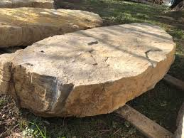

Owned by Erik Hausler, EH Landworks is based in Ferrisburgh, Vermont. Call Erik at 802-355-0991 or email via facebook or EHLandworksvt@gmail.com for pricing and what you are looking for
For seasonal updates, and to see what we're offering each month, please check us out on Facebook: https://www.facebook.com/EHLandworks/
Spring is a great time of year to prepare your lawn and home
Spring efforts include: Driveway cleanup, lawn cleanup, power brooming and turf repair. EH Landworks is fully equipped with dump truck, mini excavator, skid steer and Harley rake for any and all driveway repairs and topping. As always, we are a one stop shop for everything outdoors. Mulching, deliveries, lawn care, planting - trees, shrubs, annuals & perennials.Check out our past photos of patios, walkways and walls. We do wall blocks and they can be installed, delivered or picked up. Sizes range from 3'-7' long with variying depths and consistent thickness! plenty of rustic character . nice addition to any landscape!
Feel free to reach out anytime for a free estimate! 802-355-0991 Happy spring!Here's another example of quality work done by EH Landworks: We laid some thermal blue stone, no joints, in South Burlington. And a paved driveway extension. Our client was very pleased with results. We left almost zero lawn impact.
made by amelie fairweather